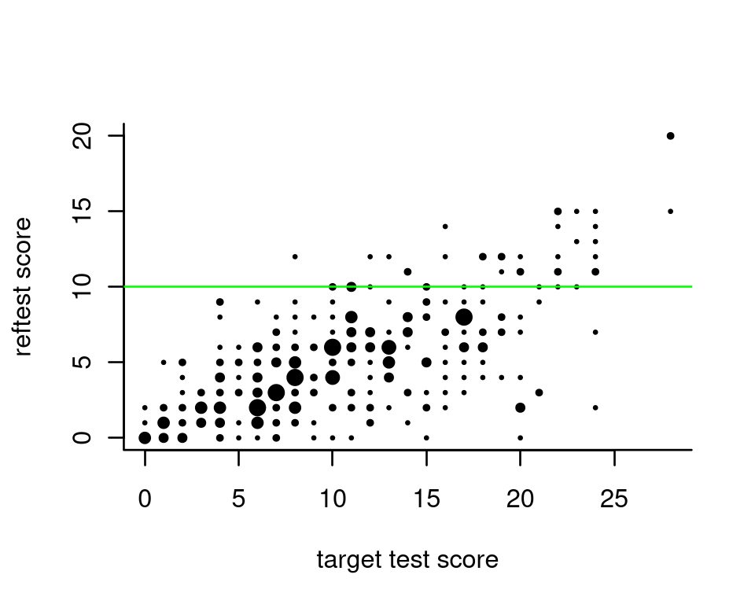

Equating a Pass-Fail Score
Timo Bechger, Jesse Koops and Ivailo Partchev
2021-09-16
Source:vignettes/Equating.Rmd
Equating.RmdEducational tests are often equipped with a threshold to turn the test score into a pass-fail decision. When a new test of the same kind is developed, we need a threshold for it that will be, in some sense, equivalent to the threshold for the old — let us call it reference — test. This is a special case of test equating, and it is similar to some well-studied problems in epidemiology; for the comfort of our predominantly psychometric audience, we start with an outline of those.
Consider a test for pregnancy. The state of nature is a binary variable (positive / negative). So is the outcome of the test, although the decision is possibly produced by dichotomizing the quantitative measurement of some hormone or other substance, just like we want to do with our educational test scores. There are four possible outcomes in all, which can be represented in a two-by-two table
| State of nature | |||
| Positive | Negative | ||
| Prediction | Positive | True positive (TP) | False positive (FP) |
| Negative | False negative (FN) | True negative (TN) | |
where TP, FP, FN, and TN are all counts. There is one ideal situation in which FP=FN=0 and all predictions are correct, and very many situations where this is not the case. Many statistics have been developed to measure the various ways in which actual data can depart from the ideal situation — this Wikipedia page lists at least 13 of them. We will mention only three:
- True positive rate (TPR, sensitivity): The proportion of positives that are correctly identified as such, or TP/(TP+FN)
- True negative rate (TNR, specificity): The proportion of negatives that are correctly identified as such, or TN/(TN+FP)
- False positive rate (FNR) = 1 - specificity = FP/(TN+FP)
What we can try to do is select the threshold for the test in such a way that the resulting table gets as close to the optimum as possible (not forgetting that the subjective cost of the two kinds of erroneous predictions may differ). The receiver operating characteristic curve (ROC curve) (Swets (1996)) is a graphical representations of the trade-offs between the TPR (one possible measure of benefit) and FPR (one possible measure of costs) resulting from all possible choices of such a threshold. The optimal choice would then be the one corresponding to the point on the curve that comes closest to the upper left corner (perfect prediction). An example ROC curve is shown on the left hand plot below.
Before we explain in more detail, let us go back to our educational example. Let us assume for a moment that all students have taken both the old (reference) test and the new (target) test, and that the decision on the reference test represents the ‘state of nature’. The task is then to select a threshold on the target test such that the decision on the reference is reproduced as closely as possible by the decision on the new test. On the right hand plot, the (fictional) distribution function of the scores on the target test is represented in blue for the students who passed the reference test, and in red for those who failed. We show two of the infinitely many thresholds that can be chosen, and it is clear that the one shown in black is much preferable to the one shown in gray (compare with the two dots on the ROC curve).
An illustration with complete psychometric data
It is time to try out these ideas with (simulated) psychometric data. First, we examine the situation where both tests, the reference test and the new one, have been administered to the same respondents. This is not a typical situation because, in practice, we usually deal with data collected in an incomplete design where no candidates take both tests. In this situation, if we can estimate the parameters of the items, we can use the IRT model to fill in the missing data. Obviously, without observations we no longer know whether an individual has actually passed the reference test or not (see Bolsinova and Maris (2016)). We can, however, calculate sensitivity and specificity even in that situation.
We use the verbal aggression data with the first 14 items assumed to be the reference test, and the remaining 10 items to be the target test. The pass-fail score on the reference test is set to 10. All this is quite arbitrary, of course – the test is not intended to measure educational achievement, and we are certainly not handing out diplomas for verbal aggressiveness.
As a start, we produce a scatter plot of the scores:

The proportion of respondents who pass the reference test gradually increases with the score on the new test; below, it is plotted in red:
prob_pass = tp = rep(0,29)
for (i in seq_along(0:28)){
prob_pass[i] = sum(ts$ref_test[ts$new_test==i]>=10) / sum(ts$new_test==i)
tp[i] = sum(ts$ref_test[ts$new_test>=i]>=10) / sum(ts$new_test>=i)
}
plot(0:28, prob_pass, ylab="Proportion passing the reference test", xlab="New test score", ylim=c(0,1), type = "o", col="red",bty='l')
lines(0:28, tp, type="o", lty=2, col="blue")The blue dashed line is the percentage of true positives. Among other things, it shows that if the new pass-fail score is zero and everybody passes, about 15 percent will be qualified. If this is high enough we can save ourselves the trouble of administering a new test.
Since the same respondents have taken both tests, it is straightforward to determine the sensitivity and specificity of the new test for each pass-fail score:
specificity = sensitivity = rep(0, 29)
for (i in seq_along(0:28)){
sensitivity[i] = sum(ts$ref_test[ts$new_test>=i]>=10)/sum(ts$ref_test>=10)
specificity[i] = sum(ts$ref_test[ts$new_test<i]<10)/(sum(ts$ref_test[ts$new_test<i]<10)+sum(ts$ref_test[ts$new_test>=i]<10))
}
plot(0:28, sensitivity, ylab="sensitivity/specificity", xlab="new test score", ylim=c(0,1), type = "o", col="red",bty='l')
lines(0:28, specificity, col="green", type="o")If sensitivity and specificity are deemed equally important, the plot suggests 14 or 15 as appropriate pass-fail scores. Higher values would make the specificity go up (i.e., less false positives) at the expense of sensitivity; lower values would do the reverse. From the plots made earlier, we see that about half of the persons with a score equal to the passing score would actually pass the reference test.
As candidates are classified into two classes, we can readily show the trade-off between sensitivity and specificity with the ROC curve:
plot(1-specificity, sensitivity, col="green", xlim=c(0,1), ylim=c(0,1), type="l",bty='l')
text(1-specificity, sensitivity, as.character(0:28), cex=0.7, offset = 0)
abline(0,1,lty=2, col="grey")Other packages and functions may produce prettier plots — but can they do it without complete data?
Incomplete Data
It is more involved, but practically more useful, to calculate sensitivity and specificity even though the two tests have not been both administered to the same persons. We first simulate a complete data set with responses to 60 items. Then, we select the first 500 persons and 40 items to represent the reference test, and the remaining 200 persons and items 21 through 60 to represent the target test. Note that the two respondent groups are sampled from two different ability populations and cannot be considered as equivalent.
We create a new dexter project, and we add the two booklets. We assume that the pass-fail limit for the reference test is 23 points.
The probability to pass
As a start, we use the function probability_to_pass to estimate, for each score on the target test, the proportion of persons who pass the reference test. We show this as a plot.
p_sm = fit_enorm(db_sm, method='Bayes', nDraws = 5000)
ou_e = probability_to_pass(db_sm, p_sm,
ref_items = ref_items,
target_booklets = tibble(booklet_id="bk2", item_id=target_items),
pass_fail = pass_fail)
plot(ou_e, what="equating")
Let the scores on the reference and new test be written, respectively, as \(R_+\) and \(N_+\), and let \(\mathbf{x}\) denote the available data. We calculate \(P(R_+ \geq c|N_+ = s, \mathbf{x})\), the probability that a person with a score of \(s\) on the target test will pass. Simply stated, we calculate this probability by averaging over what could have happened on the basis of all available data. A technical appendix explains a bit more.
A little extra in the plot are the bars. These refer to the traditional ability-based pass-fail score obtained as follows: First, estimate an ability for each score on the reference and the new test. Then, determine the score on the new test corresponding to the smallest ability equal to or larger than the ability corresponding to the pass-fail score on the reference test. This will then be the pass-fail score in the new test. The bars actually denote the probabilities of pass-fail scores thus obtained. By construction, such pass-fail scores correspond to the lowest scores giving a probability to pass equal or higher than 0.5. While this is the usual procedure to equate a pass-fail score, we believe the procedure that we propose here is more informative.
Sensitivity and specificity
Having the probability to pass and the proportion of respondents, \(P(N_+ = s)\), for all possible scores \(s\), we can calculate sensitivity and specificity and plot them for each possible pass-fail score on the target test:
plot(ou_e, what='sens/spec')
If sensitivity and specificity are equally important, the plot suggests 24 as a pass-fail score on the new test.
Conclusion
An educational test equipped with a single pass-fail score is a binary test aimed at classifying candidates into those who pass, and those who fail. In fields like medical testing or machine learning, sensitivity and specificity are typically considered to evaluate the performance of such a test. Essentially, what we have tried to do is apply this logic to educational tests. Item response theory was used to deal with incomplete data as we typically see in educational measurement. Presumably, medical testing faces similar complications, but this is beyond our immediate scope.
In closing, we should mention that this is a first attempt to equate tests in a way that does not involve unobservable quantities; it uses item response theory to fill in missing data, no more. We would like to test the functions more thoroughly before attempting an extension to classification into more than two classes. Feedback from users is very welcome.
Technical Appendix
Let us consider how we determine the probability to pass the reference test given a score \(N_+=s\) on the target test. This probability can be defined as:
\[
P(R_+ \geq c|N_+ = s, \mathbf{x})
= \int_{\mathbf{b},\theta}
P(R_+ \geq c|\theta,\mathbf{b})
f(\theta|N_+ = s, \mathbf{b}) f(\mathbf{b}|\mathbf{x})
d\mathbf{b} d\theta,
\]
where \(Y_+\) denotes the score on the reference test, with pass-fail score \(c\), \(\theta\) denotes ability and \(\mathbf{b}\) is the vector of item parameters. The integrand has three parts:
- \(f(\mathbf{b}|\mathbf{x})\): The posterior of the item parameters, given all data \(\mathbf{x}\).
- \(f(\theta|N_+ = s, \mathbf{b})\): The posterior of ability given the score on the new test.
- \(P(R_+ \geq c|\theta,\mathbf{b})\): The probability to pass given ability equal to \[ P(R_+ \geq c|\theta,\mathbf{b}) = \sum_{s \geq c} P(R_+ = s |\theta, \mathbf{b}) = \sum_{s \geq c} \frac{\gamma_s(\mathbf{b}) e^{s \theta}} {\sum_h \gamma_h(\mathbf{b}) e^{h \theta}}, \] with \(\gamma_s(\mathbf{b})\) the elementary symmetric function of order s.
To calculate a Monte-Carlo estimate, repeat:
- sample item parameters \(\mathbf{b}^* \sim f(\mathbf{b}|\mathbf{x})\)
- sample a plausible value \(\theta^* \sim f(\theta|N_+ = s, \mathbf{b}^*)\)
- calculate \(P(R_+ \geq c|\theta^*,\mathbf{b}^*)\)
We do this as often as we can afford (currently, a thousand times), and we take the average as an estimate of \(P(R_+ \geq c|\theta^*,\mathbf{b}^*)\).
Sensitivity and specificity are calculated from the score distribution on the new-test and the probability to pass. The following code shows how:
p_pass_given_s = out$probability_to_pass
ps = ou_e$pnew
tp = rev(cumsum(rev(p_pass_given_s*ps))) / rev(cumsum(rev(ps)))
sensitivity = rev(cumsum(rev(p_pass_given_s*ps))) / tp[1]
tn = rev(cumsum(rev((1-p_pass_given_s)*ps))) / rev(cumsum(rev(ps)))
specificity = 1 - rev(cumsum(rev((1-p_pass_given_s)*ps))) / tn[1]References
Bolsinova, Maria, and Gunter Maris. 2016. “Can Irt Solve the Missing Data Problem in Test Equating?” Frontiers in Psychology 6: 1956. https://doi.org/10.3389/fpsyg.2015.01956.
Swets, John A. 1996. Signal Detection Theory and Roc Analysis in Psychology and Diagnostics: Collected Papers. Hillsdale, NJ: Lawrence Erlbaum Associates, Inc.